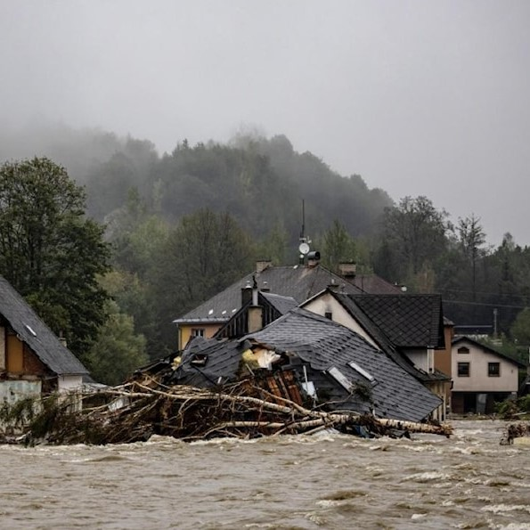
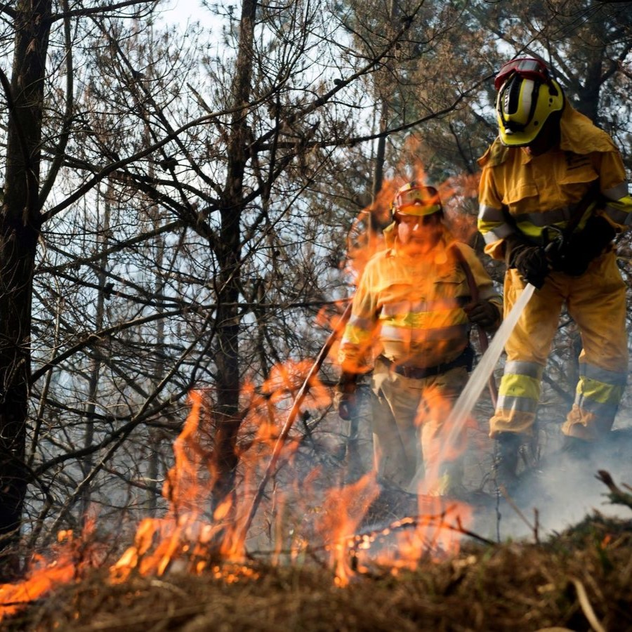
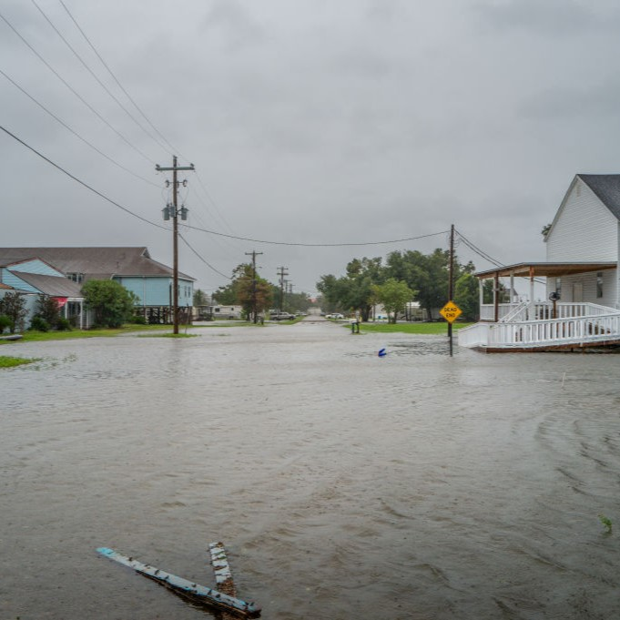
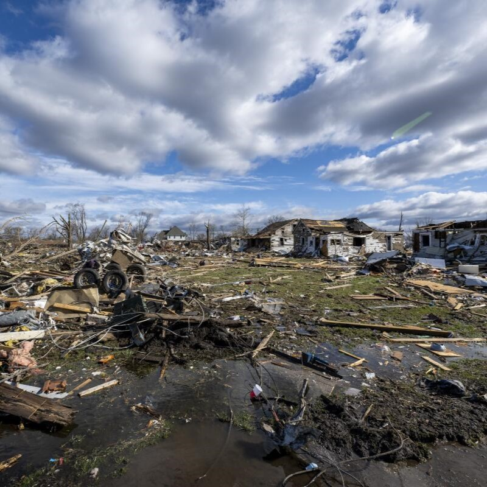

Europa central sufre la mayor inundación en más de 20 años

El lento paso del organismo meteorológico provocó decenas de muertes
y el desalojo de miles de personas.
La Organización Mundial de la Salud alertó sobre la situación en varias
zonas de Europa central durante la peor inundación en más de 20 años,
provocada por la tormenta Boris.
Según comunicó el organismo, el lento paso del organismo meteorológico
provocó decenas de muertes y el desalojo de miles de personas.
En Austria, Chequia, Alemania, Hungría, Polonia, Rumania y Eslovaquia,
los ministerios pertinentes implementaron esfuerzos de preparación, respuesta,
rescate y recuperación.
Hasta ahora, en esta región las inundaciones resultan el peligro natural más común,
con emergencias, daños, trastornos y efectos adversos de gran magnitud, en particular
por las enfermedades trasmitidas por el agua.
De acuerdo con los expertos, la crisis climática tiene un impacto cada vez mayor, e
influye en la intensidad de los fenómenos meteorológicos.
La magnitud de la catástrofe actual, subrayaron, es otro recordatorio de la urgente
necesidad de trabajar conjuntamente para combatir los problemas medioambientales.
Cantabria cierra un fin de semana negro con un balance de 78 incendios

Unos 200 efectivos han estado luchando contra el fuego este fin de semana en
Cantabria, donde se han registrado 79 incendios forestales desde la noche del
viernes en sus montes, de los que quedan dos focos, aunque ya controlados, a
última hora de este domingo.
El cambio en las condiciones meteorológicas que se ha producido este mañana ha
ayudado al operativo a extinguir la mayoría de las llamas. Después del fuerte
viento sur y de las altas temperaturas de este sábado, la lluvia ha dado un
respiro y a la una de la tarde quedaban seis incendios, tres de ellos controlados.
Según el último balance del Gobierno regional, poco antes de las 20.00 horas
había solo dos focos, ambos controlados, en Valdeprado del Río y en Dobres
(Vega de Liébana) de los 17 que se han declarado en las últimas 24 horas.
Desde las 20.00 horas del viernes, el recuento sube a 78 y, en lo que va del
mes de abril, han sido 90.
No obstante, el Gobierno de Cantabria mantiene activa la fase de premergencia
del Plan Especial de Incendios Forestales (Infocant), ya que mañana, lunes,
se prevé nivel amarillo de riesgo de incendios y el operativo sigue en nivel
máximo de alerta. Este operativo está compuesto por técnicos del medio natural,
bomberos forestales y la central de emisoristas de la Dirección General de Montes
y Biodiversidad, apoyados por técnicos de protección civil del Gobierno de Cantabria,
bomberos y la Sala del 112, además de las agrupaciones municipales de protección civil.
El huracán ‘Francine’ deja a 400.000 personas sin electricidad

Francine tocó ayer la costa de Luisiana con vientos de 160km/h
como un peligroso huracán de categoría 2 y se desplazó a gran velocidad
hacia Nueva Orleans, dejando a la ciudad anegada. Este jueves en la mañana se convirtió en
depresión tropical al alcanzar el centro de Misisipi, dejando fuertes inundaciones a su paso
y a miles de personas sin electricidad. Los reportes de PowerOutage.us indican que hasta la
tarde de este jueves más de 312.000 personas siguen sin servicio eléctrico en Luisiana, 26.000
en Misisipi y 40.000 en Alabama. El radio de daños
del ciclón se ha extendido a los Estados vecinos.
El presidente Joe Biden declaró que los esfuerzos de la Casa Blanca se dirigen a conseguir el
dinero necesario para ofrecer a Luisiana una ayuda federal que permita iniciar el reparo de los
daños cuanto antes. El gobernador del Estado expresó que la Guardia
Nacional se encuentra desplegada en los condados afectados para la distribución de alimentos, agua,
y continuar con el monitoreo y operaciones de búsqueda y rescate con cerca de 400 vehículos de alta mar,
100 barcos y 50 helicópteros. El estado de emergencia fue declarado ayer.
El Centro Nacional de Huracanes informó que la tormenta está provocando fuertes precipitaciones en
Misisipi, y otro tanto en Arkansas, Tennessee, Alabama, Georgia y Florida. Los residentes de Jackson (Misisipi),
deben estar atentos porque se mantiene la alerta por posibles inundaciones. A pesar de las impresionantes olas
procedentes de lagos, ríos y aguas del Golfo que golpearon los diques, no hay informes por ahora de muertos o heridos.
El clima extremo azota el este, el centro y el sur de Estados Unidos

Lluvia torrencial, viento feroz y calor abrasador, todo al tiempo. Este pasado domingo se registró el día con más tormentas
del año en Estados Unidos, incluyendo 25 tornados que azotaron Texas, Arkansas y Oklahoma, dejando
21 muertos y localidades enteras devastadas. Medio millón de hogares y empresas quedaron sin electricidad
tras el paso del
clima extremo, que ahora tiene a unas 68 millones de personas bajo alerta por condiciones meteorológicas adversas en este
Memorial Day, a medida que se dirige hacia el Noroeste, desde Alabama pasando por las Carolinas, Pennsylvania y Nueva York.
Se espera precipitación intensa, granizo de más de 5 centímetros de diámetro y vientos de más de 96 km/h.
Además, hay alertas
por posibles inundaciones repentinas, mayormente en Tennessee, Kentucky y el sur de Indiana, y también se ha pronosticado
la anomalía de posibles tornados tan al norte como en el Estado de Nueva York, muy lejos
de sus hábitats naturales. Al mismo tiempo que millones se resguardan por los temporales, un poco más al sur, la gente se
refugia por el calor. Especialmente en el sur de Texas y Florida, donde una ola de calor tempranera está rompiendo récords
de temperatura para estas fechas.
Si bien las condiciones de lluvia y viento son de esperarse en tiempos primaverales, su extensión y severidad extrema sí
es novedad. O tal vez no tanto, pues últimamente cada año se rompen récords de clima en cada estación, resultado del
calentamiento global.